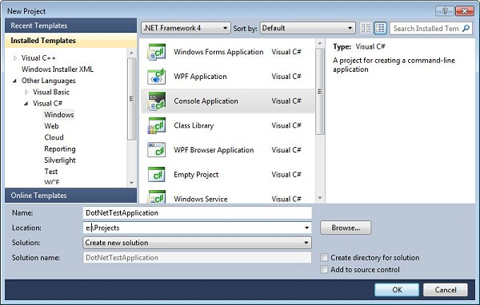
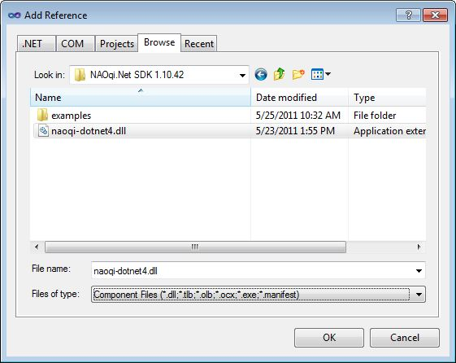

.Net SDK¶
What it does¶
NAOqi.Net allows you to call any NAOqi method from most Microsoft .Net languages. Featuring a very small download size, and coming with autocompletion, it is one of the easiest ways to program NAO from a remote Windows based machine.
It has been principally tested for c# but is known to work in Visual Basic and F#.
Limitations¶
NAOqi.Net can only be used on remote Windows machines. It cannot be used on the robot, even via the Mono framework.
It does not currently implement NAOqi’s ALModule class, and as a consequence, it cannot receive event notifications.
Requirements¶
- .Net version 2 or above for Visual Studio 2005 or Visual Studio 2008
- .Net version 4 or above for Visual Studio 2010
Getting started¶
Depending on which version of .Net that you wish to target, choose the install that is right for you:
- .Net4: naoqi-dotnet4-sdk-VERSION.msi
- .Net2: naoqi-dotnet2-sdk-VERSION.msi
You can download the latest release from the Aldebaran Community Website.
On 32 bit machines, files will be placed in:
- C:\Program Files\Aldebaran\NAOqi.Net *VERSION*
On 64 bit machine files will be placed in:
- C:\Program Files (x86)\Aldebaran\NAOqi.Net *VERSION*
Hello World Example¶
This example shows how to create a “HelloWorld” application using naoqi-dotnet4 in Visual Studio 2010.
1. Create a New CSharp Project
From the File Menu of Visual Studio 2010, choose New Project, then select a .Net project type that corresponds to the type of project you wish to create.
In this example we will choose to make the simplest C# Console Application.
2. Add a reference
Select the project in Solution Explorer and right click to add a reference.

Choose the Browse tab and navigate to the naoqi-dotnet4.dll.
If you installed to the default location, this will be c:\Program Files\Aldebaran\NAOqi.Net SDK *VERSION*
3. Add the namespace
using Aldebaran.Proxies;
4. Connect to a proxy
TextToSpeechProxy tts = new TextToSpeechProxy("<IP OF YOUR ROBOT>", 9559);
The first argument is the IP address or hostname of the NaoQi that you wish to connect to.
The second argument is the port which is typically: 9559.
5. Call a method
tts.say("Hello World");
The ‘say’ method of the TextToSpeech module takes a string argument containing the text that you wish to say.
Complete example
using Aldebaran.Proxies;
class Program
{
static void Main(string[] args)
{
TextToSpeechProxy tts = new TextToSpeechProxy("<IP OF YOUR ROBOT>", 9559);
tts.say("Hello World");
}
}
Further examples¶
In the install directory, you will find a simple example called NaoCamCSharp which shows how to make a simple windows forms application that controls the head orientation and receives images from the camera.
Type mappings between c++ and .Net¶
The underlying modules of NAOqi use c++ types. All the basic types of c++ that are used in bound methods have very similar types in .Net so need no special translation.
More complex c++ types such as std::vector<type> and AL::ALValue are mapped as follows:
Using Generic Lists
std::vector<type> becomes System.Collections.Generic.List<type>
using System.Collections.Generic;
...
MotionProxy _motion = new MotionProxy(ip, 9559);
// Add items one by one
List<string> names = new List<string>();
names.Add("HeadYaw");
names.Add("HeadPitch");
_motion.setStiffnesses(names, 1.0F);
// or
// Add elements in the constructor
List<float> times = new List<float>() {1.0f, 2.0f};
Using ArrayLists
AL::ALValue becomes System.Collections.ArrayList
using System.Collections;
// Using ArrayList
ArrayList list = new ArrayList();
list.Add("HeadYaw");
list.Add("HeadPitch");
Using object[]
The .Net ArrayList is a collection of objects. Because in .Net all types derive from Object, any basic type, or array of objects will be automatically cast into an object or object array if that is what the method accepts.
MotionProxy _motion = new MotionProxy(ip, 9559);
object names = new object[] { "HeadYaw", "HeadPitch" };
_motion.setStiffnesses(names, 1.0F);
Complex ArrayLists
This example shows how to get the bytes of an image object.
VideoDeviceProxy _videoDeviceProxy = new VideoDeviceProxy(ip, 9559);
// The numbers describe the format: 160*120, RGB, 5fps
_videoDeviceProxy.subscribe("dotNetExample", 0, 15, 5);
Object imageObject = _videoDeviceProxy.getImageRemote("dotNetExample");
// Take the 6th element of the imageObject as a byte array
byte[] imageBytes = (byte[]) ((ArrayList) imageObject)[6];
FAQ¶
Mismatched target frameworks¶
If you try to use a naoqi-dotnet2 in Visual Studio 2010, you will receive an error about mis-matched targets. The solution is either to use naoqi-dotnet4, or to add an app.config file to your project which tells Visual Studio to play nice.
<configuration>
<!--
naoqi-dotnet2.dll was built with .Net 2
VS2010 isn't as forgiving as previous versions about loading
assemblies built with previous versions of .Net
You need to explicitly ask it to play nice:
-->
<startup useLegacyV2RuntimeActivationPolicy="true">
<supportedRuntime version="v4.0"/>
<requiredRuntime version="v4.0.20506"/>
</startup>
</configuration>
Building on 64bit machines¶
To build projects on 64 bit machines, you need to choose “x86” in Configuration Manager. If you attempt “Any CPU” you will get errors about mixed architectures.
Changes in version 1.12¶
- Support for VS2010 and .Net4
- Support for generic proxies - allows you to call your own c++ modules
- Support for non-ascii languages - automatic managed UTF16 to native UTF8 convertion
- Updated against NAOqi 1.12 modules and methods